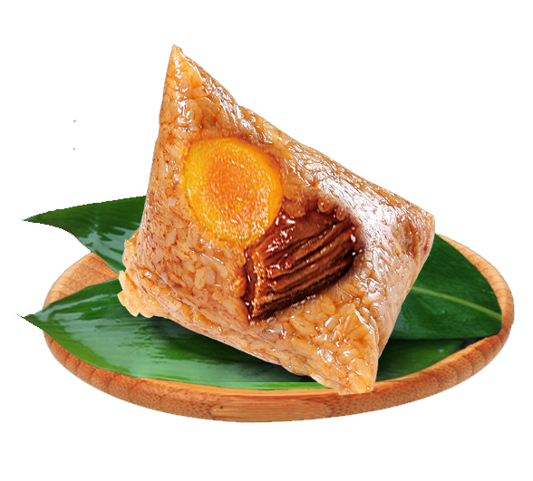
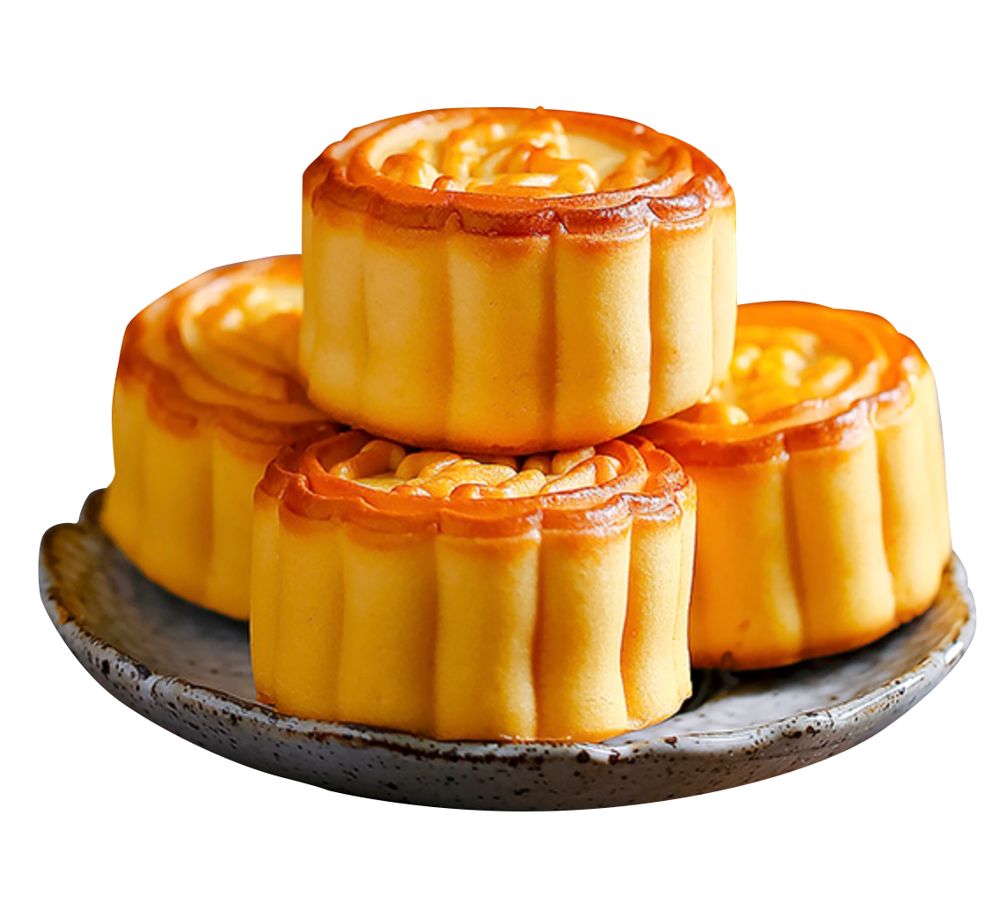
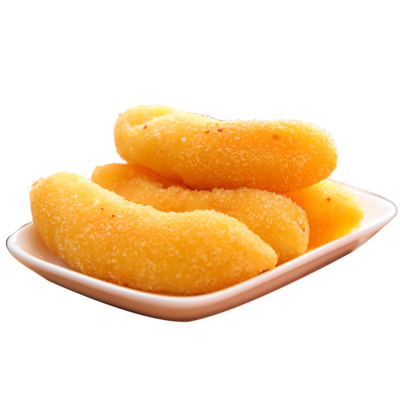
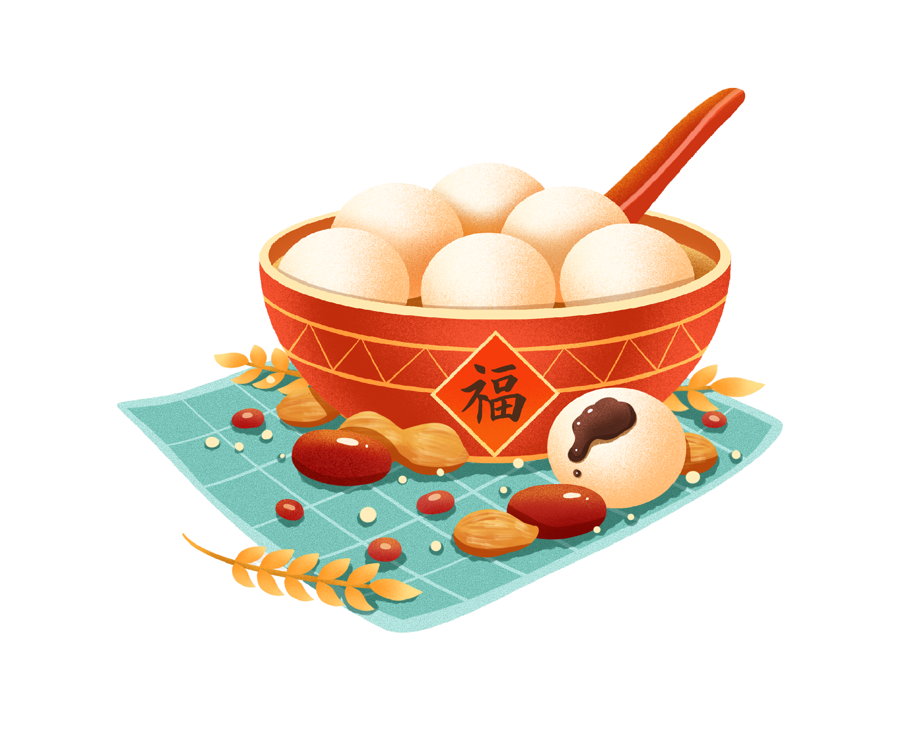
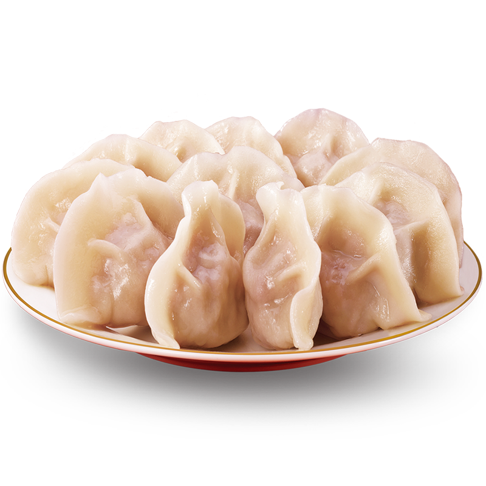
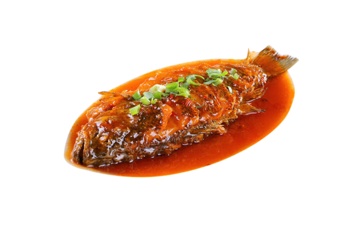
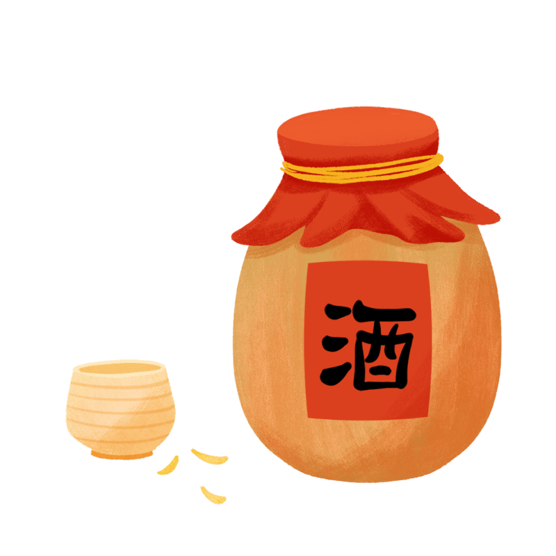
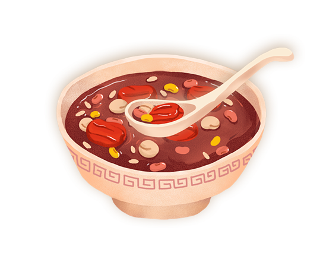

中国传统节日—节日美食

端午节 - 粽子
粽子是端午节的传统美食，通常用糯米包裹着馅料。

中秋节 - 月饼
月饼是中秋节的象征，有着丰富多样的口味。

春节 - 年糕
有“年年高”之意，希望生活和事业越来越好。

元宵节 - 汤圆
这是元宵最具代表性的食物，寓意团圆美满。

冬至 - 饺子
饺子是冬至必不可少的美食，寓意着团圆和吉祥。

除夕 - 红烧鱼
除夕年夜饭的主角——红烧鱼，寓意“年年有余”。

重阳节 - 菊花酒
古人认为菊花酒有祛灾祈福的吉祥寓意。

重阳节 - 菊花酒
香甜可口的腊八粥,寓意着吉祥、丰收和团圆